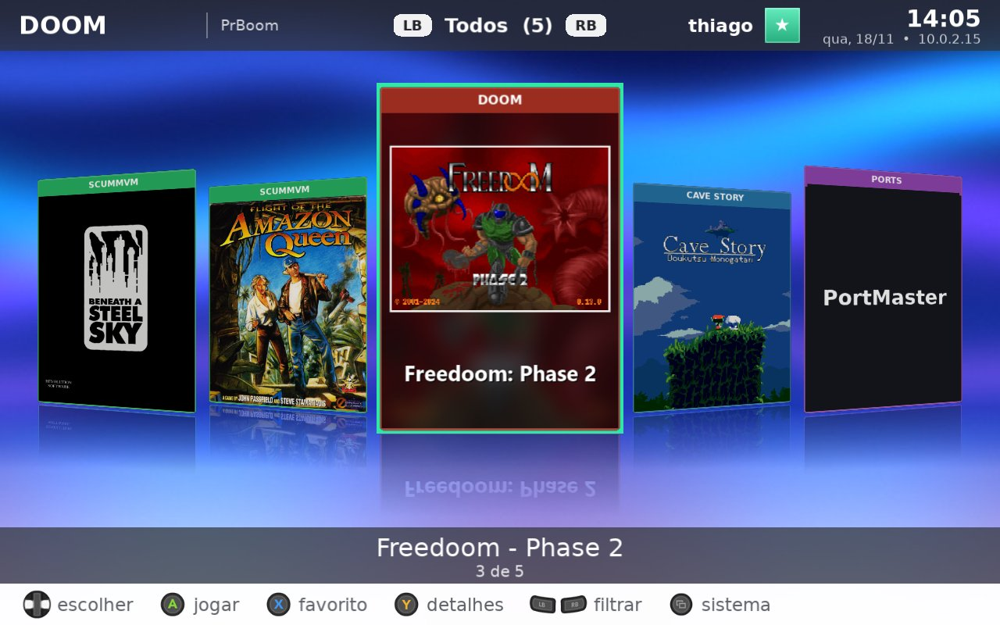
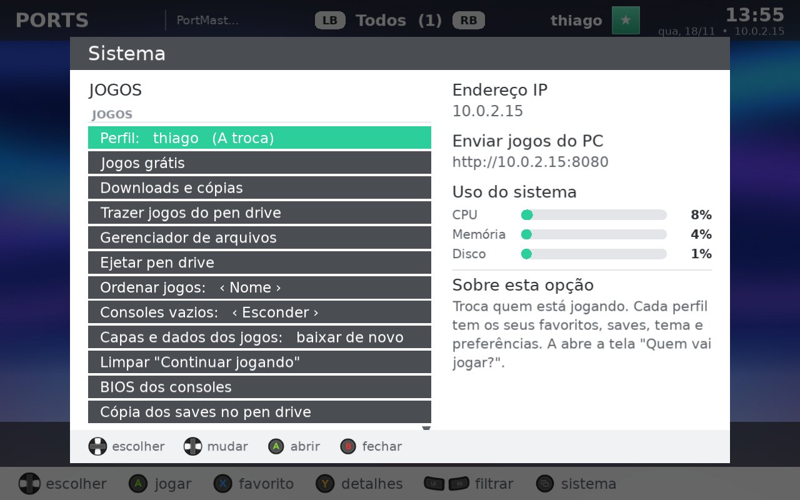
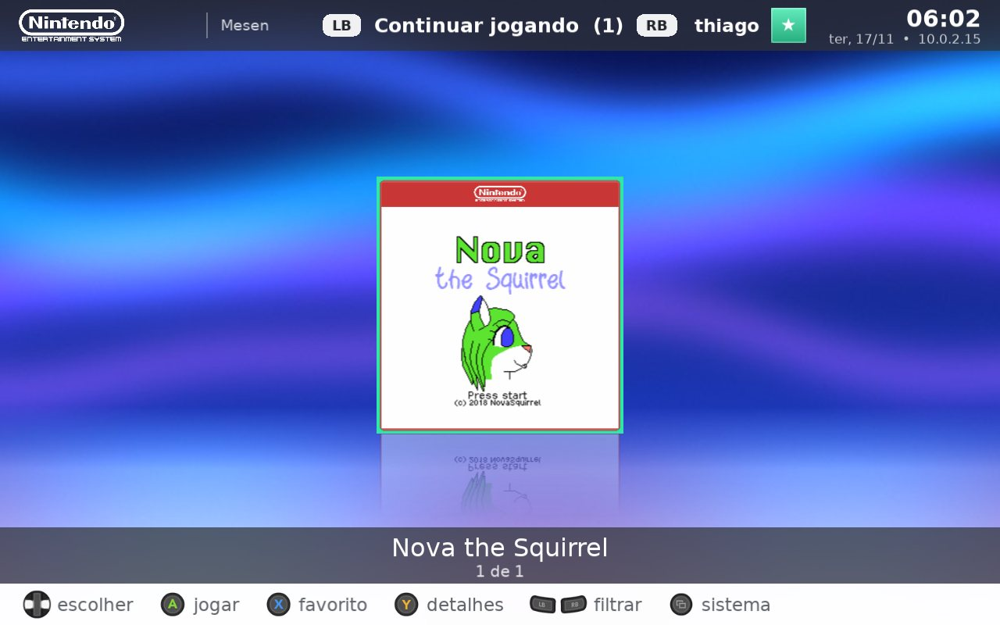
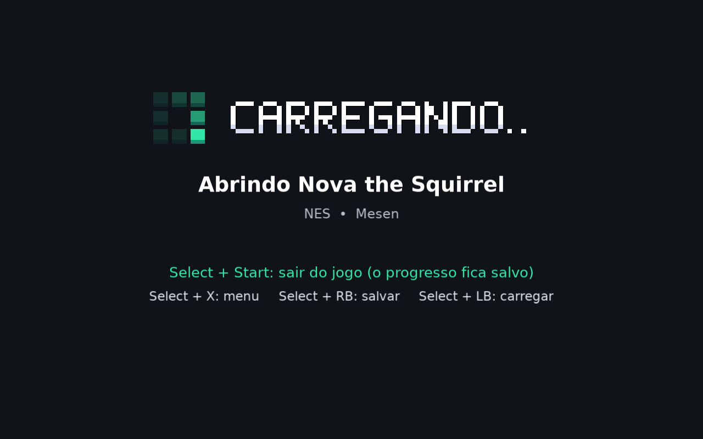
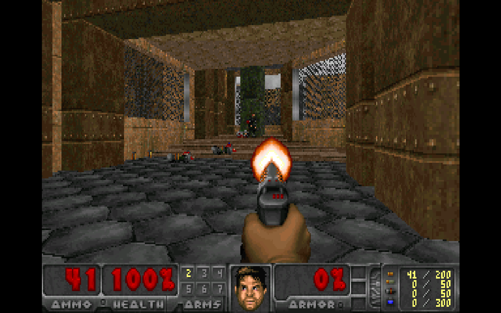
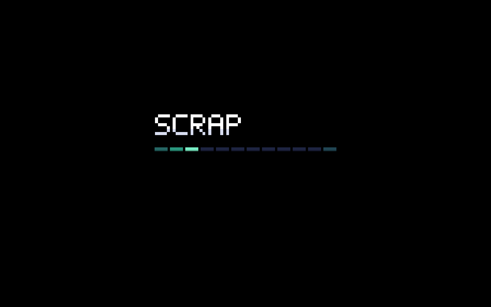
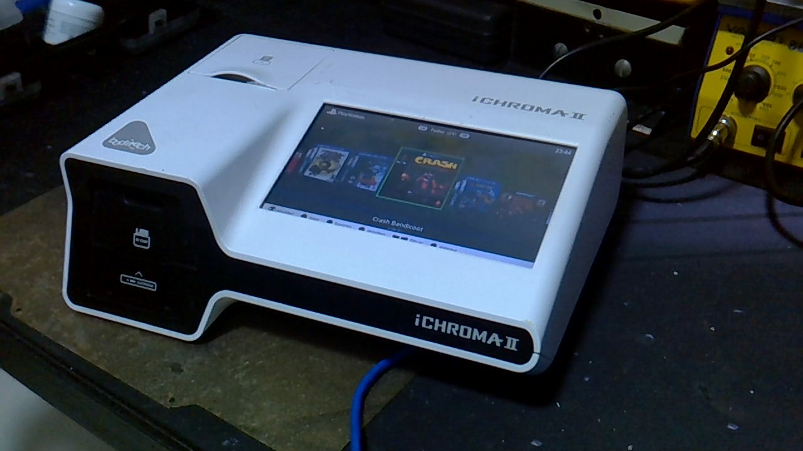
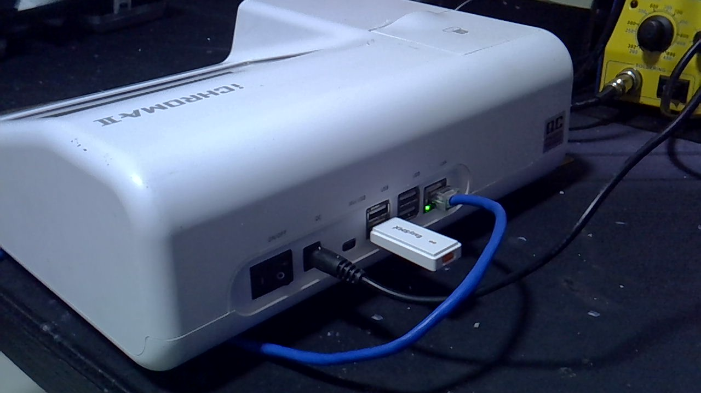
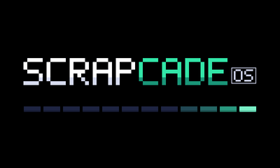

Computador velho vira videogame.Old computers become game consoles.
O ScrapCade OS liga direto num menu de jogos. Grave num pen drive, ligue o PC e jogue do NES ao Nintendo 64, PSP e fliperama. ScrapCade OS boots straight into a game menu. Write it to a USB stick, start the PC and play anything from NES to Nintendo 64, PSP and arcade.
Versão atual:Current version: v0.20.0-beta. Livre e de código aberto (GPLv3).Free and open source (GPLv3).

Instalar em 3 passosInstall in 3 steps
-
Baixe o .isoDownload the .iso
Um arquivo só, para BIOS antigo e UEFI: 64 bits ou 32 bits.One file for legacy BIOS and UEFI: 64-bit or 32-bit.
-
Grave num pen driveWrite it to a USB stick
Com o Rufus ou o balenaEtcher, em pen drive de 4 GB ou mais.With Rufus or balenaEtcher, on a 4 GB stick or bigger.
-
Ligue pelo pen driveBoot from the stick
No primeiro boot ele se arruma sozinho e cria o seu perfil. Para ficar no HD: Sistema > Instalar.On first boot it sets itself up and creates your profile. To keep it on the hard drive: System > Install.
Jogos, BIOS e ROMs não acompanham o sistema. Mande os seus pelo navegador do celular ou por um pen drive.Games, BIOS and ROMs are not included. Send yours from your phone's browser or a USB stick.
Novidades da v0.21New in v0.21
- PS2, GameCube, Wii e 3DS no PC de 64 bits, e 13 consoles novos: Sega CD, 32X, PC Engine, Atari, Neo Geo Pocket, WonderSwan, Virtual Boy e mais.PS2, GameCube, Wii and 3DS on 64-bit PCs, plus 13 new consoles: Sega CD, 32X, PC Engine, Atari, Neo Geo Pocket, WonderSwan, Virtual Boy and more.
- Instalar ao lado do Windows, usando só o espaço livre; ao ligar, escolha o sistema.Install next to Windows, using only free space; pick the system at startup.
- Todos os filtros do RetroArch (um por console), molduras, coleções, jogar online e conquistas.Every RetroArch filter (one per console), bezels, collections, online play and achievements.
- Menu em inglês, navegador moderno, saves sincronizados e Cave Story e Quake nos jogos grátis.Menu in English, a modern browser, synced saves, and Cave Story and Quake among the free games.
Consoles
Para ligar: PC de 64 bits com 2 GB de memória, ou PC de 32 bits (Pentium 4, Pentium M, Atom) com 1 GB. O que cada console pede para rodar bem:To boot: a 64-bit PC with 2 GB of RAM, or a 32-bit PC (Pentium 4, Pentium M, Atom) with 1 GB. What each console needs to run well:
| Console | EmuladorEmulator | PC para rodar bemPC to run it well | 32 bits |
|---|---|---|---|
| NES, Master System, Game Gear, Game Boy | Mesen, Genesis Plus GX, Gambatte | Qualquer umAny | simyes |
| Super Nintendo, Mega Drive, Game Boy Advance | Snes9x, Genesis Plus GX, mGBA | Qualquer umAny | simyes |
| Atari 2600, 7800 e Lynx, PC Engine, Neo Geo Pocket, WonderSwan, Virtual Boy | Stella, ProSystem, Handy, Beetle | Qualquer umAny | simyes |
| Sega CD, 32X, PC Engine CD | Genesis Plus GX, PicoDrive, Beetle PCE Fast | Pentium 4, AtomPentium 4, Atom | simyes |
| Fliperama, Neo GeoArcade, Neo Geo | FBNeo, MAME 2003-Plus | Pentium 4, AtomPentium 4, Atom | simyes |
| PC (DOS), Doom, Quake, Cave Story | DOSBox Pure, PrBoom, TyrQuake, NXEngine | Qualquer umAny | simyes |
| PlayStation | PCSX ReARMed | Pentium 4, AtomPentium 4, Atom | simyes |
| Nintendo 64 | Mupen64Plus-Next | Core 2 Duo e vídeo com OpenGL 3.3 (sem ele, mais lento)Core 2 Duo and OpenGL 3.3 graphics (slower without it) | simyes |
| Nintendo DS | melonDS | Core 2 DuoCore 2 Duo | nãono |
| PSP, Dreamcast | PPSSPP, Flycast | Core i3 e vídeo com OpenGL 3.3Core i3 and OpenGL 3.3 graphics | nãono |
| Sega Saturn | Beetle Saturn | Core i5 de 4 núcleosQuad-core Core i5 | nãono |
| PlayStation 2, GameCube, Wii | LRPS2, Dolphin | Core i5 recente e placa de vídeo dedicada ou Intel/AMD recenteRecent Core i5 and a dedicated or recent Intel/AMD GPU | nãono |
| Nintendo 3DS | Citra | Core i5 recente e vídeo com OpenGL 4.3Recent Core i5 and OpenGL 4.3 graphics | nãono |
| Half-Life | Xash3D | Core 2 Duo (com a sua cópia da Steam)Core 2 Duo (with your own Steam copy) | simyes |
Na versão de 32 bits entram os emuladores leves: FCEUmm, Snes9x 2010, PicoDrive e gpSP. Os requisitos são estimativas: cada versão é testada em máquinas virtuais e em poucos PCs de verdade.The 32-bit version uses the light emulators: FCEUmm, Snes9x 2010, PicoDrive and gpSP. Requirements are estimates: every version is tested on virtual machines and a few real PCs.
CapturasScreenshots





De onde veioWhere it came from
Começou com um analisador de laboratório, o iChroma II, que ia para o lixo eletrônico. Com o sistema dele modificado, virou fliperama.It started with a lab analyzer, the iChroma II, headed for e-waste. With its system modified, it became an arcade machine.
O mesmo menu foi para os PCs. Um notebook parado na gaveta ou um desktop de escritório aposentado viram console, sem comprar nada.The same menu then came to PCs. A laptop forgotten in a drawer or a retired office desktop becomes a console, without buying anything.



Fliperama no iChromaArcade on the iChroma
Android 2.3 com boot próprio e o menu ScrapCade em Java, pela GPU. Roda PlayStation, Super Nintendo, Neo Geo e Nintendo 64 num processador de 1 GHz.Android 2.3 with its own boot and the ScrapCade menu in Java, on the GPU. Runs PlayStation, Super Nintendo, Neo Geo and Nintendo 64 on a 1 GHz processor.